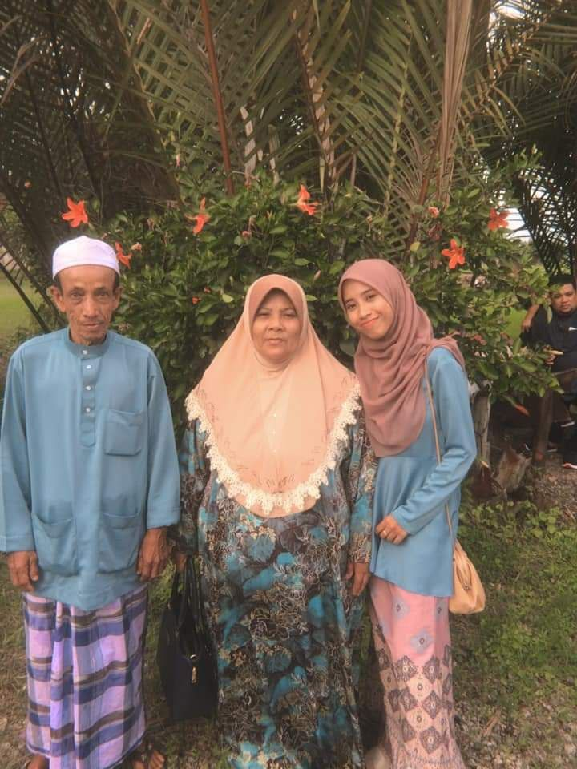
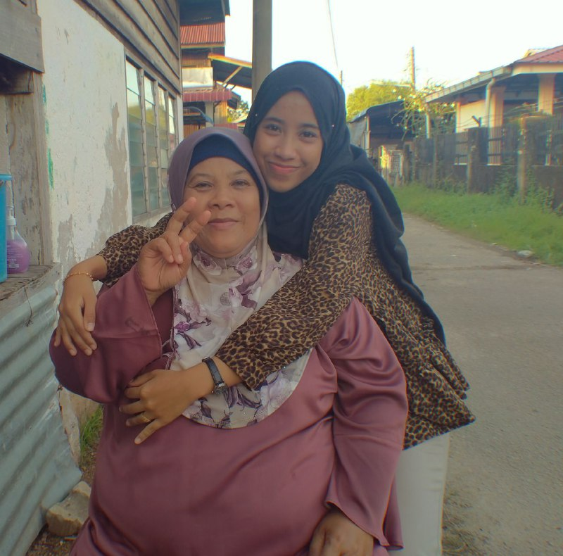
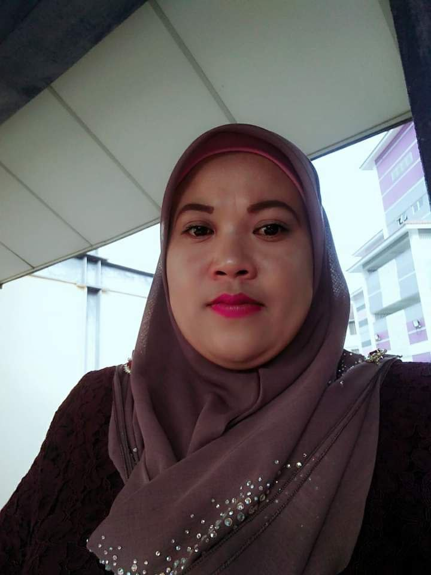
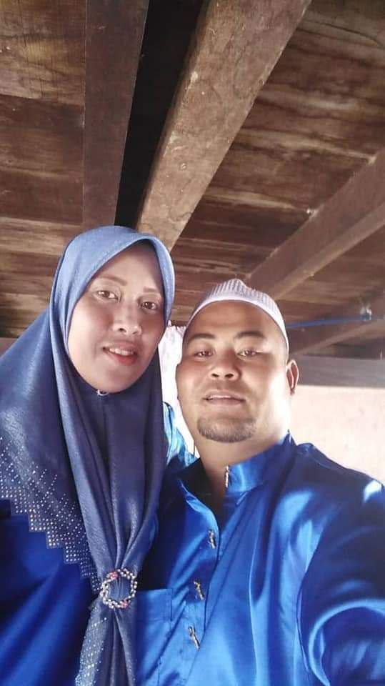
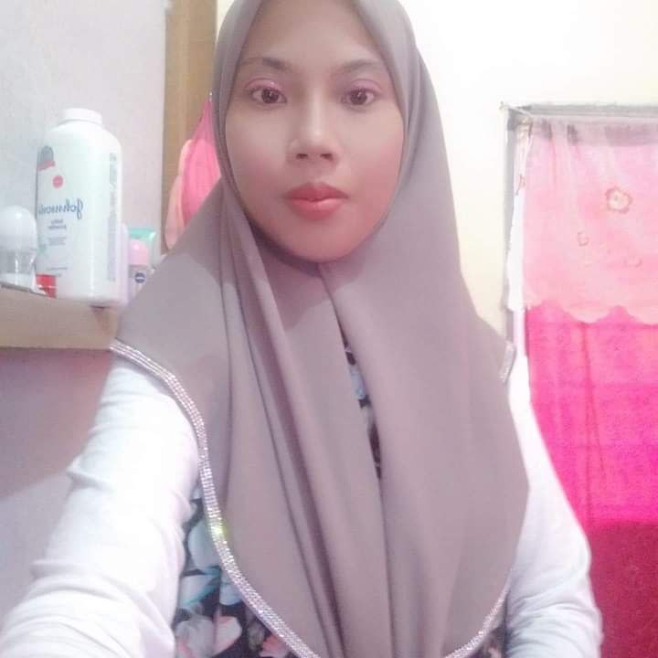
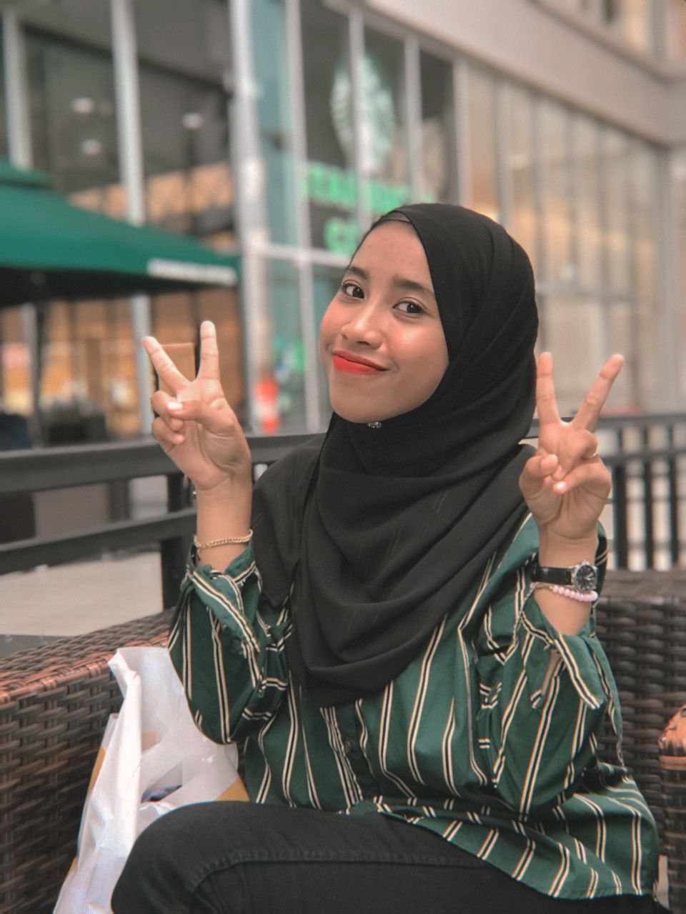

The meaning of family is really big for me. Family is everythings to me and i don't know if i don't have them in this world. We always support each other, loving each other, respect each other and also trust each other. My parents is very strict about respectful among each siblings. They want we to respect each other because respect is really important for we to keep loving each other. The love between these families will never break, but it will be a distance if they do not respect each other. So my last word is we always have to respect each other in the family and still keep in touch even though we busy at work because family is always number one for us.
9 Reasons Why Family is the Best Thing in Your Life
This is my beautiful mother. Her name is Che Embun binti Sebawai. She is 57 years old and her birthday on 15th November 1963. Her occupation is a housewife. She is very hardworking and responsible person. For me, she is very beautiful lady in my eyes because she always look good whenever she going somewhere. I'm the lucky person because have mother like her in this world. Then, the best part is her cooking is always the best food in the world. No one can match her cooking. I love her so much.
This is my eldest sister. Her name is Jamaliah binti Ishak. She is the first daughter of my family. This year she is 40 years old and her birthday is on 5 October 1980. She is widow and have 2 children which is Artikah and Asrul. Her occupation is waiter. My eldest sister is my mother's successor. Although kak maliah is a single mother, she is a self-sufficient person to earn a living and support herself and her family without expecting mercy from others. Besides that, she is very strict with her siblings but she also a loving person. Kak Maliah has sacrificed a lot for her siblings as she is willing to sacrifice her future by quitting school in form 3 because at that time my parents could not support my siblings' schooling. I love her so much.
This is my brother. His name is Abu Zahir bin Ishak and he is the second child in the family. He is 38 years old and his birthday is on 3rd March 1982. Her occupation is businessman. My brother has two children, Aniq and Allysa. Apart from that, my brother has also adopted an adopted child named Anggun Adriana. Anggun's presence has brightened the lives of his brother and wife. My family and I never considered Anggun as an outsider but considered her as our own biological family.
This is my second sister. Her name is Siti Zaleha binti Ishak. She is the third children in our family.This year she is 35 years old and her birthday is on 17th October 1985. Her occupation is a tailor. She has 2 children which is Afiq and Damia. Kak Leha is a loving person and often visits mom and dad if they have free time because the distance from Kak Leha's house to my parents' house is quite close compared to the others. Also, if Kak Leha has free time, she often tries the viral menu seen on her Facebook account. Kak Leha's cuisine is also very tasty and she often sends it to my parents' house. I love her so much.
This is my third sister. Her name is Siti Rafidah binti Ishak. She is the forth children in our family. This year she turns 27 years old and her birthday is on 14th May 1993. She is a housewife. She has 2 sons which is Ammar and Akif. Kak Idah is the closest sibling to me because our age range is not so far, which is 7 years. All the problems I face will be told to Kak Idah. Kak Idah is also my friend who often accompanies me everywhere. Kak Idah is a generous person. She often spends us as a family eating or giving us gifts. In addition, she also often visits my parents at home when I am not at home. I love her so much.

This is my loving father. My father's name is Ishak bin Ismail. He is 66 years old. His birthday on 27th September 1954. His occupation is a farmer. He is very handsome and also stylish in our family. After that, he is very responsible person in our family and he always making funny among the family. Lastly, my father is a man who is always there for me and I will never find a man like him anywhere else. I love him so much.




